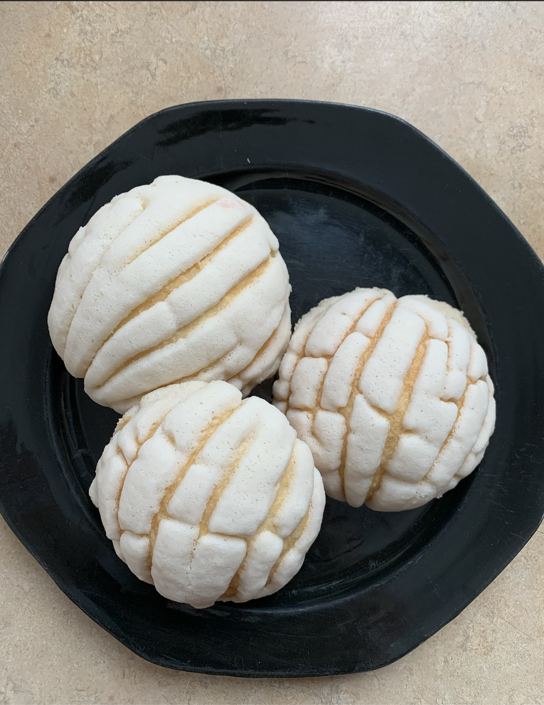
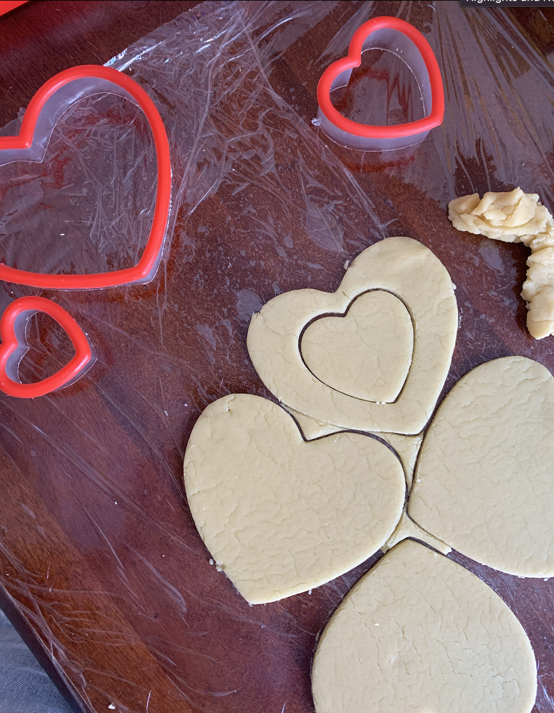
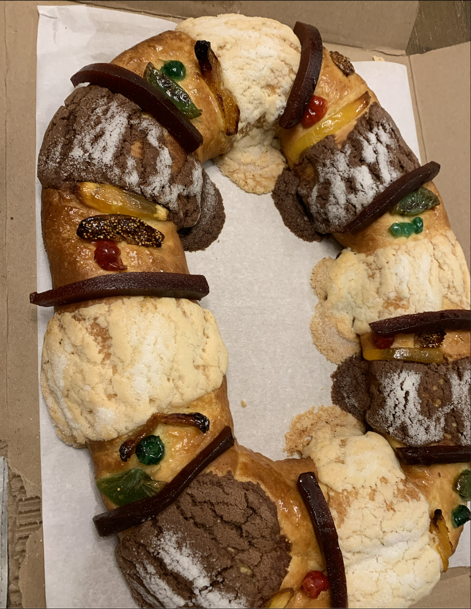
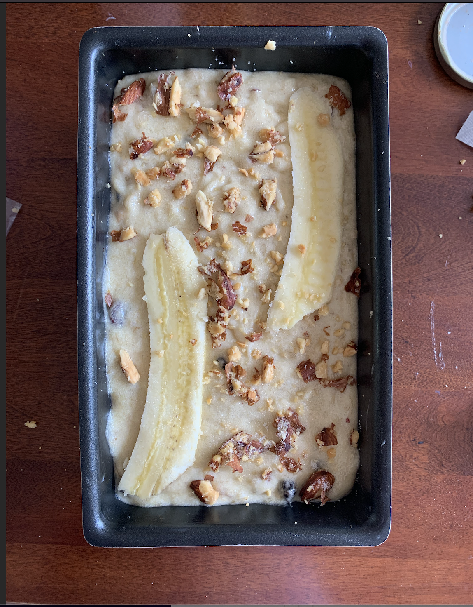

Overview
Purpose
The purpose of my website is to promote/inform people about my small business, share product details like prices and other information such as places, contacts and details to make orders.
Audience
The audience for my website will be people that would like to purchase bread or desserts.
Branding
Website Logo
Style Guide
Color Palette
Palette URL: https://coolors.co/396e94-e7c24f-a43312-381d2a-aabd8c| primary | secondary | accent1 | accent2 |
|---|---|---|---|
| #EEE0CB | #C2948A | #896A58 | #312523 |
Typography
Heading Font: Cormorant Garamond
Paragraph Font: Roboto
Normal paragraph example
I chose these fonts to have a big contrast between them, but yet to look simple and elegant. I would like to give a calming and clean feeling through my website. I want my website to give feelings of peace and familiarity.
Colored paragraph example
I chose these fonts to have a big contrast between them, but yet to look simple and elegant. I would like to give a calming and clean feeling through my website. I want my website to give feelings of peace and familiarity.
Navigation
Site Map
Content
Us - Home page
We all come from different places and backgrounds, we all have a different story that make us who we are, but even if we are so different from each other there’s something that connects us, and that is our love for food. “Pan Dulce” has the smell of fresh baked bread, the feel of home and the sight of family. We hope you feel our love through our little Mexican-Bread business. Our doors are more than open to people all ages, places, languages and backgrounds, to experience the feeling of home and love through our freshly-baked bread and desserts, through our Pan Dulce. Here, we offer our best breads and desserts just for you. The activities you can do in our site are viewing our delicious products, selecting which ones you’d like to purchase and making the order! You can also contact and reach out to us.
Images for the Home page


How? - page 2
This website is designed to make it easy for you to make purchases and orders of our products and to give you the best experience while doing so. To do this, you can go to the “order” section, choose the Pan Dulce you’d like to purchase (with flavors and quantity), pick one of our delivery methods and make your purchase. If you have questions, or problems occur while doing this, do not hesitate on contacting us and we’ll try to make your experience the best as possible. Our products and our team are honest, distinguished and filled with love. We hope to share a little bit of our Mexican heart and roots with this beautiful project of ours. Delivery or pickup? We have two methods of delivery for when you make your purchase: “home-delivery” and “Pickup”. When you choose “home-delivery”, your freshly-baked Pan Dulce will be delivered right to you with lots of good care. Depending on where you’re at, delivery can take up from 30 minutes to around an hour and a half. You can always trust us when delivering your products, not only we take extremely good care of them, but we also choose the best and most fresh Pan Dulce to deliver to you. Want to get the full experience? Come get your sweet bread and say hi to us when you choose “pickup” as your delivery methods. We can either have them ready for you to take home with you, or you can skip the online-ordering and pick out your sweets in-store with us. Either way, your experience is most valuable to us, that might be in person or online, so our customer service will always be the best for you.
Images for the Page 2
 Questions? - page 3
We have answers to your questions! That might be concerning our prices, flavors, packages or delivery/pickup, we have the answers. Some of the questions that our site alone will be able to answer for you are “What is the pricing?”, “What are the flavors available of the desserts?” and “How can I make an order?”. Although the list goes on, everything is placed out to make it easy for you to find everything you need. Do not hesitate on contacting us if you have any additional questions or problems. Tips: - When you are about to make your purchase, make sure you know which products you want to purchase, their flavors and quantity. - Make sure that you have your address information handy if you would like to have your Pan Dulce delivered with care right to you - Our team is always ready to answer any questions you might have, so do not hesitate when you have questions or problems with the website, orders, etc. - Everything tastes better when it is shared, so make sure you get some for your loved ones too
Images for the Page 3
 Wireframes
Create three wireframes for your site. One for each page and list them here
Home
[Any additional details about home that the wireframe does not make clear]
[Page 2]
[Any additional details about page 2 that the wireframe does not make clear]
[Page 3]
[Any additional details about page 3 that the wireframe does not make clear]